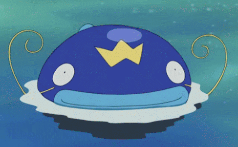
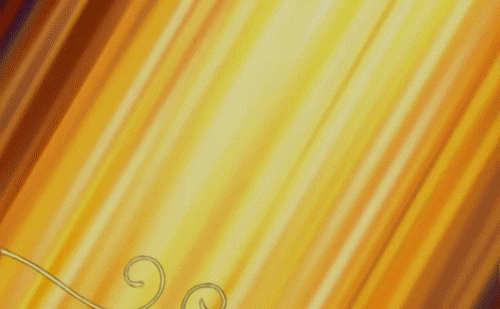

Nativo da Amazônia, promove benefícios para a comunidade e para o ecossistema, o Pirarucu como
característica adaptativa possui dois aparelhos respiratórios, constituído por brânquias e por uma bexiga
natatória que serve de pulmão para uma respiração aérea.
Sanando a forma em que obtém alimento, o Pirarucu é um animal onívoro, se alimentando desde plantas até mesmo
de animais como vermes, insetos, moluscos, crustáceos, peixes, anfíbios e répteis. O Pirarucu, por meio da
osmorregulação, controla a concentração de sais em seu organismo. Graças à osmorregulação eles conseguem se
manter vivos em um meio hipotônico como a água.
O sistema circulatório do pirarucu é um sistema simples, onde o sangue passa apenas
uma vez por ciclo no seu coração, sendo um sistema fechado, pois o sangue passa apenas nos vasos e não tem
outras cavidades. O sistema nervoso do Pirarucu é presente, dividido em sistema nervoso central, que é
formado por encéfalo e medula espinhal; e sistema nervoso periférico que é formado por nervos cranianos,
nervos espinhais e gânglios.
Durante períodos de seca os Pirarucus formam casais. Os machos, nessa época, desenvolvem uma coloração mais
avermelhada em suas nadadeiras. Antes da fêmea depositar os ovos, o macho limpa o local, retirando as raízes
e outros empecilhos com sua mandíbula. A reprodução do Pirarucu ocorre entre dezembro e maio, cada fêmea
pode pôr cerca de 180 mil ovos, que eclodem próximo ao quinto dia e logo após isso as larvas nadam próximos a
cabeça do pai. O desenvolvimento embrionário se baseia na fase zigótica, onde permanece até que ocorra a
primeira divisão celular, logo depois passa para a fase de segmentação, que começa quando a
primeira divisão do zigoto ocorre, que é uma segmentação meroblástica. Isso acontece porque os ovos dos peixes
têm um vitelo que limita a área onde o embrião pode se desenvolver. Partindo para a terceira fase, ocorre o
rearranjo das células através de movimentos morfogenéticos, possibilitando que todas tenham a mesma
informação. E por fim, a fase de diferenciação, em que os órgãos específicos que permitem a identificação do novo
indivíduo aparecem. Nesta fase de diferenciação aparecem as vesículas cefálicas (cérebro), ópticas
(olhos) e o blastóporo (ânus). Gradualmente, os ossos da coluna vertebral, os músculos e os outros órgãos
também se formarão.
Como personagens animados, podemos citar o Pokémon Whiscash:

